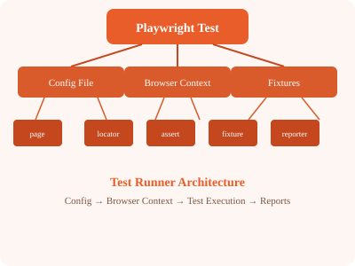

This course takes you from zero to productive with Playwright across 25 chapters. By the end, you will write maintainable end-to-end tests, integrate API testing, handle network interception, set up CI/CD, and use AI agents to generate and heal tests. Each chapter includes code examples, diagrams, and hands-on exercises.
# Download Node.js from https://nodejs.org (LTS version)
# Verify installation
node --version
npm --version
# Install VS Code from https://code.visualstudio.comOn Windows, use PowerShell 5.1+ or PowerShell Core. When running npx commands, you may need to set the execution policy:
Set-ExecutionPolicy -Scope CurrentUser -ExecutionPolicy RemoteSignedmkdir my-playwright-project
cd my-playwright-project
npm init -y
npm install @playwright/test
npx playwright install
npx playwright --version to verify the setup.